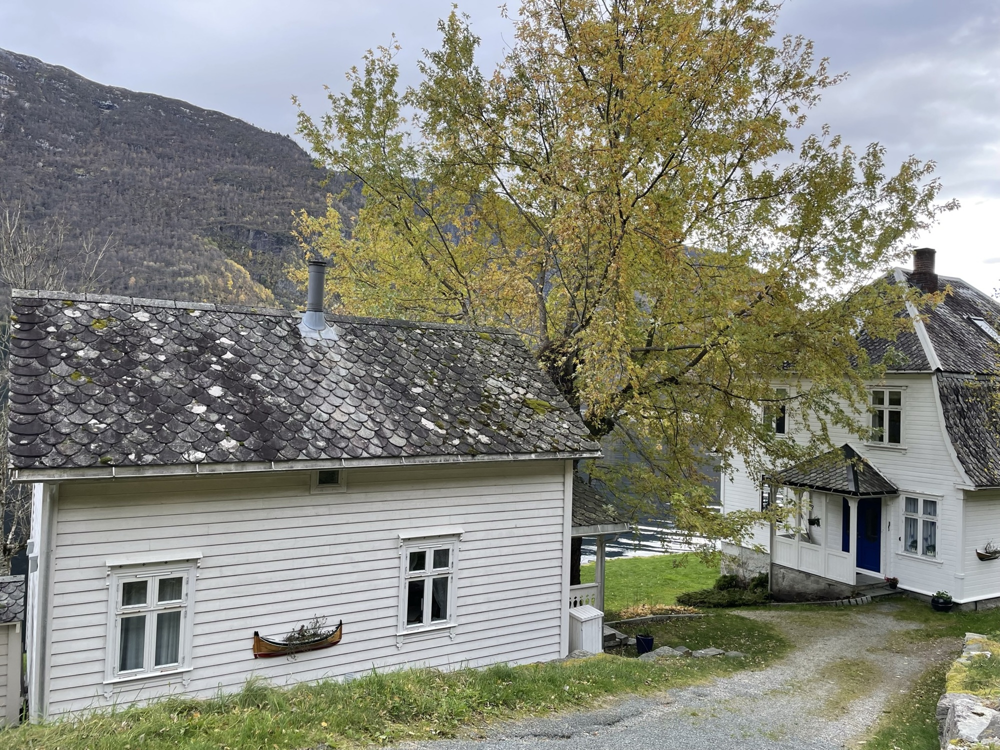
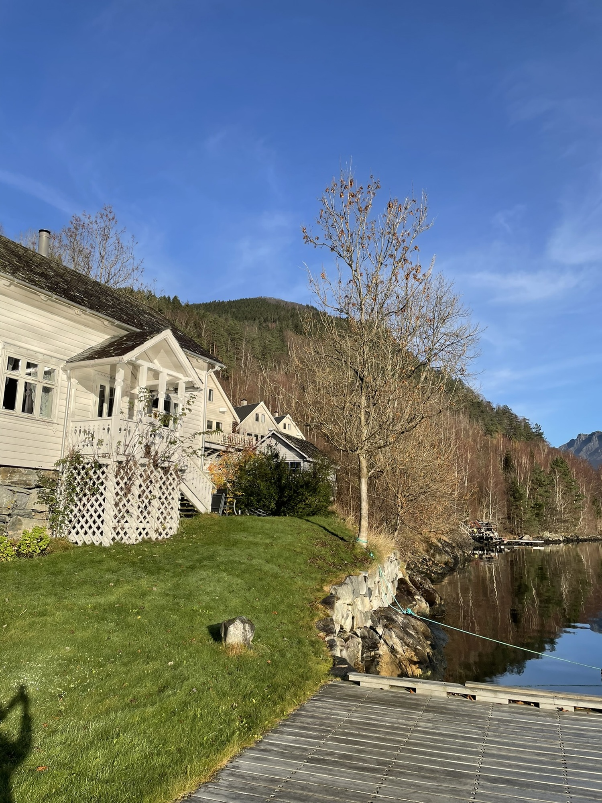
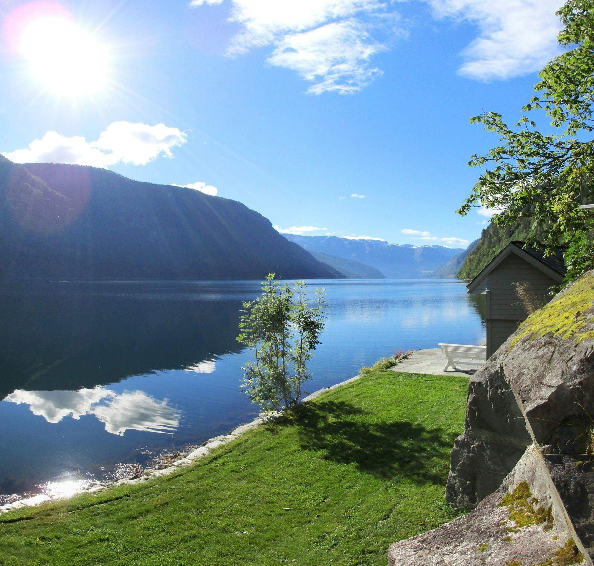

Velkommen til Øydvinstod Hyttegrend
I et praktfullt fjordlandskap, kåret i 2005 til verdens beste reisemål av It. National Geograpic, har vi til leie i Øydvinstod i et helt ugenert strandområde, et romantisk feriehus og tre hytter. Egen strandlinje, badevik, ny båtbrygge og bålplass. Den vakre, ville og uberørte naturen i Ulvik-/Osaområdet gjør området ideelt for fjell- og båtturer, samt bilturer til Voss, Flåm, Bergen og Sommerskisentret ved Folgefonna. Hyttene har sengeplasser til 6 personer og feriehuset/blondehuset "Butikken" har 4 + ekstra barneseng. Feriestedet Øydvinstod ligger ved idylliske Osafjorden 4 km fra Ulvik sentrum i Hardanger. Her kan man finne ro og fred i et uberørt paradis med høye fjell og fjorden bare noen meter unna. I fjorden ruller niesene, verdens minste hval, og i luften er ørnen å se. Et havørnpar hekker i Osafjorden. Godt fiske i Osafjorden.
  